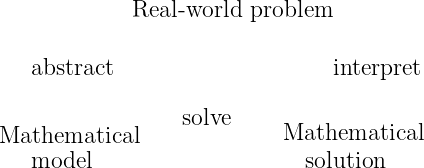
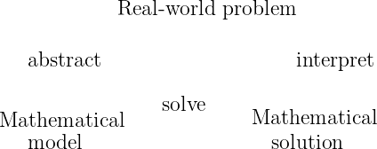

We Introduction some basics of differential equations
Consider the following situation:
An object falling through the air has its velocity affected by two factors: gravity and a drag force. The velocity downward is increased at a rate of due to gravity, and it is decreased by a rate equation to times the current velocity of the object. If the ball is initially thrown downwards at a speed of , what will the velocity be 10 seconds later?
There might be enough information here to determine the velocity at any later point in time (it turns out, there is) but the information given isn’t really about the velocity. Rather, information is given about the rate of change of the velocity. We know that the velocity will be increased at a rate of due to gravity. How can this be interpreted? The rate of change has been discussed previously way back in Calculus 1; this is the derivative. Thus, if we let the unknown function represent the velocity of the object, the description above gives information about the derivative of this function for. Taking the two different factors (the increase and decrease of velocity) into account, we can write an expression for this derivative, giving that
Even though we don’t know what is, we know that it must affect the derivative of the velocity in this particular way, so we can write this equation. That’s why we give a name to this function, so that we can use it in writing this question, which, since it is an equation involving the derivative of an unknown function , we call this a differential equation. Our goal here would be to use this information, plus the fact that the velocity at time zero is to find the value of , or, more generally, the function for any .The laws of physics, beyond just that of simple velocity, are generally written down as differential equations. Therefore, all of science and engineering use differential equations to some degree. Understanding differential equations is essential to understanding almost anything you will study in your science and engineering classes. You can think of mathematics as the language of science, and differential equations are one of the most important parts of this language as far as science and engineering are concerned. As an analogy, suppose all your classes from now on were given half in Swahili and half in English. It would be important to first learn Swahili, or you would have a very tough time getting a good grade in your classes. Without it, you might be able to make sense of some of what is going on, but would definitely be missing an important part of the picture.
One example of a first order differential equation is
Here is the dependent variable and is the independent variable. Note that we can use any letter we want for the dependent and independent variables. This equation arises from Newton’s law of cooling where the ambient temperature oscillates with time.To make sure that everything is well-defined, we will assume that we can always write our differential equation with the highest order derivative written as a function of all lower derivatives and the independent variable. For the previous example, since we can write (eq1) as where the highest derivative is written as a function of and , we have a proper differential equation. On the other hand, something like
is not a proper differential equation because we can’t solve for . This expression could either be written as
and while both of these are proper differential equations, the version in (eqNonDiff) is not.
For some equations, like , the independent variable is not explicitly stated. We could be looking for a function or a function (or of any other variable) and without any other information, any of these is correct. Usually, there will be information in the problem statement to indicate that the independent variable is something like time, in which case everything should be written in terms of . It is for this reason that Leibniz notation is preferred for derivatives; an equation like
is unambiguously looking for any answer .
Solving the differential equation means finding the function that, when we plug it into the differential equation, gives a true statement. For example, take (eq1) from the previous section. In this case, this means that we want to find a function of , which we call , such that when we plug , , and into (eq1), the equation holds; that is, the left hand side equals the right hand side. It is the same idea as it would be for a normal (algebraic) equation of just and . We claim that
is a solution. How do we check? We simply plug into equation (eq1)! First we need to compute . We find that . Now let us compute the left-hand side of (eq1). Yay! We got precisely the right-hand side. But there is more! We claim is also a solution. Let us try, We plug into the left-hand side of (eq1)And it works yet again!
So there can be many different solutions. For this equation all solutions can be written in the form
for some constant . Different constants will give different solutions, so there are really infinitely many possible solutions. See Normally a reference to a previous figure goes here. for the graph of a few of these solutions. We do not yet know how to find this solution, but we will get to that in the next chapter.
Solving differential equations can be quite hard. There is no general method that solves every differential equation. We will generally focus on how to get exact formulas for solutions of certain differential equations, but we will also spend a little bit of time on getting approximate solutions. And we will spend some time on understanding the equations without solving them.
Most of this book is dedicated to ordinary differential equations or ODEs, that is, equations with only one independent variable, where derivatives are only with respect to this one variable. If there are several independent variables, we get partial differential equations or PDEs.
Even for ODEs, which are very well understood, it is not a simple question of turning a crank to get answers. When you can find exact solutions, they are usually preferable to approximate solutions. It is important to understand how such solutions are found. Although in real applications you will leave much of the actual calculations to computers, you need to understand what they are doing. It is often necessary to simplify or transform your equations into something that a computer can understand and solve. You may even need to make certain assumptions and changes in your model to achieve this.
To be a successful engineer or scientist, you will be required to solve problems in your job that you have never seen before. It is important to learn problem solving techniques, so that you may apply those techniques to new problems. A common mistake is to expect to learn some prescription for solving all the problems you will encounter in your later career. This course is no exception.
So how do we use differential equations in science and engineering? The main way this takes place is through the process of mathematical modeling. First, we have some real-world problem we wish to understand. We make some simplifying assumptions and create a mathematical model, which is a translation of this real-world problem into a set of differential equations. Think back to the example at the beginning of this section. We took a physical situation (a falling object) with some knowledge about how it behaves and turned that into a differential equation that describes the velocity over time. Then we apply mathematics to get some sort of a mathematical solution. Finally, we need to interpret our results, determining what this mathematical solution says about the real-world problem we started with. For instance, in the example at the start of the section, we could find the function , but then need to interpret that if we were to plug 10 into this function, we will get the velocity 10 seconds later.
Learning how to formulate the mathematical model and how to interpret the results is what your physics and engineering classes do. In this course, we will focus mostly on the mathematical analysis. This will be interspersed with discussions of this modeling process to give some context to what we are doing, and give practice for what will be seen in future physics and engineering classes.
Let us look at an example of this process. One of the most basic differential equations is the standard exponential growth model. Let denote the population of some bacteria on a Petri dish. We assume that there is enough food and enough space. Then the rate of growth of bacteria is proportional to the population—a large population grows quicker. Let denote time (say in seconds) and the population. Our model is
for some positive constant .Solution: First we need to solve the equation. We claim that a solution is given by
where is a constant. Let us try: And it really is a solution.OK, now what? We do not know , and we do not know . But we know something. We know , and we know
. Let us plug these conditions in and see what happens.
Therefore, or . So
 

At one minute, , the population is . See Normally a reference to a previous figure goes here..
Let us talk about the interpretation of the results. Does our solution mean that there must be exactly 6400 bacteria on the plate at 60s? No! We made assumptions that might not be true exactly, just approximately. If our assumptions are reasonable, then there will be approximately 6400 bacteria. Also, in real life is a discrete quantity, not a real number. However, our model has no problem saying that for example at 61 seconds, .
___
Normally, the in is known, and we want to solve the equation for different initial conditions. What does that mean? Take for simplicity. Suppose we want to solve the equation subject to (the initial condition). Then the solution turns out to be (exercise)
We call the general solution, as every solution of the equation can be written in this form for some constant . We need an initial condition to find out what is, in order to find the particular solution we are looking for. Generally, when we say “particular solution”, we just mean some solution.
A few equations appear often and it is useful to know what their solutions are. Let us call them the four fundamental equations. Their solutions are reasonably easy to guess by recalling properties of exponentials, sines, and cosines. They are also simple to check, which is something that you should always do. No need to wonder if you remembered the solution correctly. It is good to have these as solutions that you “know” to build from when we learn solutions to other differential equations later on. In fo:chapter we will cover the first two, and the last two will be discussed in ho:chapter.
First such equation is
for some constant . Here is the dependent and the independent variable. The general solution for this equation is We saw above that this function is a solution, although we used different variable names.Next,
for some constant . The general solution for this equation isNext, take the second order differential equation
for some constant . The general solution for this equation is Since the equation is a second order differential equation, we have two constants in our general solution.Finally, consider the second order differential equation
for some constant . The general solution for this equation is orFor those that do not know, and are defined by
They are called the hyperbolic cosine and hyperbolic sine. These functions are sometimes easier to work with than exponentials. They have some nice familiar properties such as , , and (no that is not a typo) and .